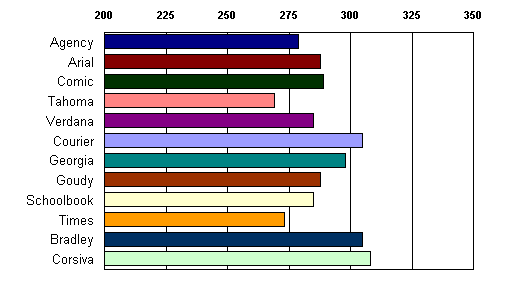
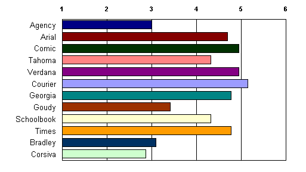
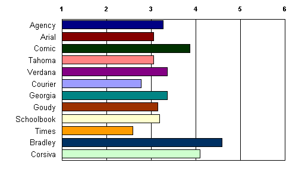
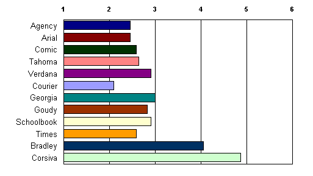
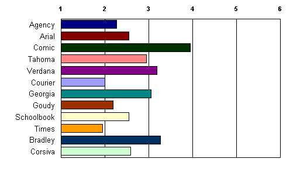
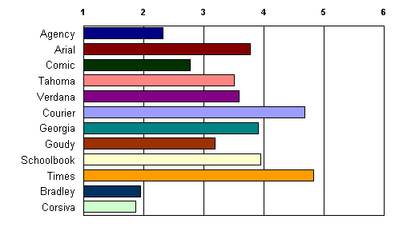
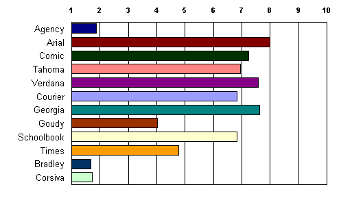
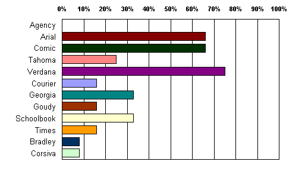

Popüler İnternet Fontlarının Karşılaştırması
Hangisi, Ne Zaman, En İyi?
Web'de kısa bir araştırma, bize çoğu internet sitesinin büyük kısmının ya da tamamının 12-büyüklükteki (boyut = 3) fontları kullandığını söylüyor.
Bunu göz önünde bulundurarak, en popüler fontları bu büyüklükte, etkin okuma hızı (okuma zamanı/doğruluk) ve de font okunabilirlik algısı kriterlerine göre karşılaştırdık.
Buna ek olarak, belirli font tiplerine karşı gösterilen tepkileri de deney kapsamında inceledik. Yani, belirli font tipleri bazı özel durumlara has olabilir ve de bunun sonucunda, sitelerin görünümüne etki edebilir. Bu nedenle, aynı zamanda sitenin genel havasını etkileyebilecek bazı belirli estetik nitelikleri de inceleme altına aldık, bunlara genel font tercihi de diyebiliriz. Yapılan incelemelerde beş sans serif ve serif, iki tane de gösteriş fontu kullanıldı.
Tablo 12. İncelenen 12 font (Font örneklerini burada görebilirsiniz)
|
Sans Serif Fontları |
Serif Fontları |
Gösteriş Fontları |
|
Agency FB (Agency) Arial Comic Sans MS (Comic) Tahoma Verdana |
Courier New (Courier) Georgia Goudy Old Style (Goudy) Century Schoolbook (Schoolbook) Times New Roman (Times) |
Bradley Hand ITC (Bradley) Monotype Corsiva (Corsiva) |
Günümüzde, Sans serif ve serif fontları en popüler internet fontları olarak biliniyor. İki gösteriş fontu ise, tabii ki, sadece alışılagelmiş kategorilere uymayan birkaç durumu örnekliyor. Ama, bu fontlarla yapılacak bir incelenme, gösteriş fontlarının standart fontlara kıyasla hem performans hem de popülerlik karşılaştırmalarında yerini belirlemede yardımcı olabilir.
METOTLAR
Pentium II tabanlı masaüstü bilgisayarları, 60 Hz, 96 dpi, 17"lik, çözünürlüğü de 1024 x 768 olarak ayarlanmış ekranlar kullanıldı. Diğer fontlarla aynı seviyede karşılaştırılabilmesi için büyüklüğü 12'den 14'e (yaklaşık 3mm) çıkarılan Agency fontu dışında bütün fontların büyüklüğü 12 olarak tutuldu.
Katılımcılar
Yirmi iki katılımcı (7 erkek ve 15 bayan) bu çalışma için gönüllü oldu. Katılımcıların yaşları 20 - 44 arasında değişiyorken, ortalamaları ise 25 olaraak hesaplandı. (Standart sapma = 6 yıl) Bütün katılımcılar herhangi bir cihaz kullanmadan 20/40 ya da daha iyi bir görüşe sahipti. Katılımcıların %95'i, haftada en az birkaç kere olmak üzere bilgisayarda düzenli olarak belge okuduklarını ve de %68'i en az dört yıllık üniversite mezunu olduğunu belirttiler.
Deney Yöntemi
Font nitelikleri katılımcılara 12 adet, her biri daha önce belirtilen font tiplerinden birine sahip metinler okutularak karşılaştırıldı. Font tipi ve metinler Latin kare dizaynına göre ayarlandı.
Metinler Microsoft'un elektronik kütüphanesi Encarta™'dan alındı. Metinlerin hepsi yaklaşık olarak aynı okuma seviyesinde ve de benzer konular hakkında yazılmış (hepsi psikoloji ile ilgili konular). Birbirine yakın uzunlukta (ortalama metin başına 1032 kelime, standart sapma = 40 kelime), yatay kenar boşlukları 640 piksel olacak şekilde ayarlandı. Satır başına kelime sayısı font tipinin genişliğine göre çeşitlilik gösterdi. Font rengi ise bütün metinlerde beyaz arkaplan üzerine siyah olarak tercih edildi.
İşlem Sırası
Katılımcılar bilgisayar ekranından yaklaşık 57 cm uzaklığa yerleştirildi. Kendilerinden her biri 15 tane rastgele yerleştirilmiş test kelimeleri (test kelimelerinin sayısı kendilerine söylenmedi) içeren metinleri "mümkün olduğunca hızlı ve anlayarak" okumaları talep edildi. Test kelimeleri, dikkatle okunduğunda yazının gidişatıyla terslik gösterdiği kolaylıkla belli olacak şekilde seçildi. Bu kelimeler gramatik olarak da orijinal kelimelerden farklı yapılandırıldı. (Örneğin, "cake" kelimesi sıfat olan "fake" kelimesiyle değiştirildi.) Katılımcılar, bu test kelimelerini fark ettiklerinde yüksek sesle söylemeleri konusunda bilgilendirildi.
Font okunabilirliğini ve de okuma süresine etkisini doğru olarak belirleyebilmek için, etkin okuma puanı kullanıldı. Bu puan katılımcıların test kelimelerini algılama yüzdesinin toplam okuma süresine bölümüyle edildi--Süreler kronometre ile ölçüldü.
Her bir pasajın okunması tamamlandıktan sonra, katılımcılar okunabilirlik algısı/estetik çekicilik hakkında bir anket doldurdular. Bu anket 6 puanlık bir ölçekle değerlendirildi. Çapalar, 1 = "Çok kötü" ve 6 = "Mükemmel" olarak belirlendi. On iki anket de tamamlandığında, on iki font tipi de genel tercihe göre sıralanmış oldu.
Sonuçlar ve Yorumlar
Font tipleri arasındaki objektif ve subjektif farkları tahlil etmek için ANOVA dizaynı kullanıldı. Bundan sonraki karşılaştırmalarda ise Bonferroni testi esas alındı. Font tercih sırası ise Friedman c2 baz alınarak ölçüldü.
Font Okunabilirliği
Font okunabilinirliğini okuma verimliliği göz önünde bulunarak incelendiğinde, font tipinin önemli bir etkisi olmadığı sonucuna varıldı. Bu büyüklükteki fontların, anlamı okuyucuya aktarma konusunda oldukça başarılı olduğunu belirten diğer çalışmalar ışığında (kendi çalışmamız da dahil, örneğin; Bernard & Mills, Summer/2000; Bernard, Mills, Frank, & McKown, Winter/2001) bu sonuç fazla şaşırtıcı değil.
Okuma SüresiOrtalama okuma süresi, doğruluk derecesini göz önünde bulundurmadan incelendiğinde ortaya önemli derecede farklar çıktı. [F(11, 231) = 3.90, p < .001]. Daha detaylı incelemede ise, Tahoma fontunun Corsiva fontuna göre çok daha hızlı okunduğu belirlendi (Bkz. Şekil 1). Bu iki font arasındaki okuma süresi farkı yaklaşık iki sayfalık bir yazı için 40 saniyeydi. Bu, fontlar arasındaki okuma süresi farkının nispeten küçük olduğu bulgusu daha önceki çalışmalarımız (Örneğin; Bernard & Mills, Summer/2000) ile tutarlılık gösterdi. Bundan dolayı, fontlar alışılagelmiş büyüklük ve tip aralığında olduğu sürece, çeşitli font tiplerine ilişkin okuma hızları, kısa internet metinleri açısından pek belirleyici olmuyor.

Font Okunabilirlik Algısı
Font okunabilirlik algısını değerlendirirken font türleri [F(11, 231) = 13.75, p <.001] arasında önemli farklar ortaya çıktı. Comic, Verdana, Georgia ve Times, Agency, Goudy, Bradley, and Corsiva font tiplerine kıyasla büyük ölçüde daha okunabilir olarak algılandı (Bkz: Şekil 2).

Kişilik Yansıtanlar
Katılımcıların belirli font tiplerinin 'kişilikli' olduğuna dair izlenimleri incelendiğinde, yine font tipleri [F(11, 231) = 5.47, p <.001] arasında büyük farklar görüldü. Times fontu, Comic, Bradley veya Corsiva fontlarına oranla 'kişilik' değeri çok daha düşük olarak algılandı. Diğer yandan, Bradley'nin ise Courier, Schoolbook, Goudy, Tahoma veya Times'a kıyasla oldukça 'kişilikli' olduğu belirlendi (Bkz: Şekil 3).

Zarif Görünenler
Katılımcıların 'zariflik' algısına göre fontlar kıyaslandığında elde ettiğimiz tablo, font tipleri [F(11, 231) = 10.84, p <.001] arasındaki büyük farkı ortaya koydu. İnceleme detaylandırıldığında Corsiva fontunun Bradley haricinde diğer bütün fontlara üstünlük sağladığı belirlendi. Bradley'i de aynı zamanda Agency ve Courier fontlarına kıyasla katılımcılar tarafından daha 'zarif' olarak nitelendirildi (Bkz: Şekil 4).

Genç & Neşeli Görünenler
Katılımcıların, fontların 'Genç & Neşeli' olması yönündeki geribildirimlerini tahlil edildiğinde, font tipleri [F(11, 231) = 7.84, p <.001] arasında ortaya yine büyük farklar çıktı. Yapılan detaylı incelemelerde Comic fontunun Arial, Agency, Courier, Schoolbook, Goudy ve Times fontların kıyasla çok daha fazla 'Genç & Neşeli' olarak algılandığı görüldü. Diğer bir yandan Times ise yine bu kategoride Georgia, Verdana ve Comic fontlarının gerisinde kaldı (Bkz: Şekil 5).

Sistematik Görünenler
Katılımcı izlenimleri font tiplerinin 'Sistematik' olarak değerlendirildiğinde yine font tipleri [F(11, 231) = 15.76, p <.001] arasında ortaya önemli farklar çıktı. Times ve Courier fontları, Tahoma, Verdana, Georgia ve Schoolbook fontları dışındaki fontları 'Sistematiklik' açısından geride bıraktı (Bkz: Şekil 6).

Genel Font Tercihi
Katılımcıların genel font tercihleri konusundaki düşünceleri de font tipleri [c2 (11, N = 22) = 121.2, p < .001] arasında büyük bir fark yarattı. Arial, Comic, Tahıma, Verdana, Courier, Georgia ve Schoolbook fontları diğer fontlara oranla çok daha fazla tercih edildi (Bkz: Şekil 7). Aslında Arial'in bu kadar çok tercih edilmesi fazla şaşırtıcı olmadı, zira çocukların (Bernard, Mills, Frank, & McKown, Winter/2001), ergin yetişkinlerin (Bernard, Liao, & Mills, Winter/2001) ve üniversite öğrencilerinin (Bernard & Mills, Summer/2000) katıldıkları daha önce yaptığımız font çalışmalarında da Arial en fazla tercih edilen font olmuştu. Tuhaf olan ise, Times fontunun, yazı işleme programlarında varsayılan font olarak seçili olmasında rağmen, bütün çalışmalarımızda fazla tercih edilmeyenler arasında yer almasıydı.

İlk veya İkinci Tercih Seçilme Yüzdesi
Araştırmalar detaylandırıldığında, Verdana, Arial ve Comic fontlarının incelenen font tipleri içerisinde katılımcıların ilk veya ikinci tercihleri oldukları belirlendi. Katılımcıların hiçbiri Agency fontunu ilk veya ikinci tercihi olarak seçmedi (Bkz: Şekil 8).

SONUÇLAR
İncelenen fontları göz önünde bulundurarak birçok sonuca varılabilir. Birincisi, gerçek okunabilirlik değerleri açısından fontlar arasında büyük bir farka rastlanmadı. Buna rağmen, okuma süresi değerlerinde oldukça büyük farklar elde edildi, yine de bu farklar birçok çevrimiçi yazı için fazla önemli olmayabilir, zira pek fazla diş kavuğunu dolduracak cinsten değiller. Ama diğer bir yandan da, belki de, hangi fontun daha okunabilir olduğunu belirlemede bir faydası olabilir. Bu çalışmada, en okunabilir olarak belirlenen font tipleri, Courier, Comic, Verdana, Georgia ve Times oldu.
Bu çalışma aynı zamanda bize fontların estetik çekiciliği hakkında da bilgi verdi. Örneğin, gösteriş fontları Bradley ve Corsiva en kişilikli ve de en zarif fontlar olarak sivrildiler (Ama, bu gösteriş fontlarını belirli bir sıklıktan fazla kullanılmak istendiğinde, son derece ihtiyatlı olunmalı, zira bu fontlar performans ve popülerlik sıralamalarında ise hep sonlarda yer aldılar). Dahası, Courier ve Times en sistematik, Comic ise en genç ve neşeli görünen fontlar oldu.
Bu bilgiler pratiğe döküldüğünde bir sitenin havasını yaratmada insanlara fikir verebilir. Örneğin, en sistematik ve en zarif olarak algılanan fontlar bir çevrimiçi banka sitesi için daha verimli olabilir. Ya da tersine, en genç ve neşeli, aynı zamanda da kişilikli olarak algılanan fontlar da çocuklara yönelik, mesela bir çevrimiçi oyuncak mağaza sitesinde daha verimli olabilir. Tabii ki, genel tercih her zaman dikkate alınması gereken önemli bir husus, özellikle uzun çevrimiçi metinler için. Bu ve diğer font çalışmalarımızda da, Arial, Verdana ve Comic tercih sıralamasında en başlarda yer aldılar.
Şu da akıldan çıkarılmamalıdır ki, bütün katılımcılar Amerika Birleşik Devletleri'nde yaşadıklarından dolayı bu deneyin subjektif sonuçları uluslararası okuyuculara mal edilmemelidir. Web tararımcılarını elde ettiğimiz bu sonuçların kendi hedef ziyaretçilerine uygun olup olmadığını belirlemede yardımcı olması için kendi özel ziyaretçi testlerini yapmaya davet ediyoruz.
Not: Font çalışmalarımız üzerine yapılan tartışmaları, ve bu konudaki diğer çalışmaları http://www.optimalweb.org adresinde bulabilirsiniz.
Referanslar
- Bernard, M., & Mills, M. (2000). So, what size and type of font should I use on my website? Usability News 2.2 [Online]. ../usabilitynews/2S/font.htm
- Bernard, M., Mills, M., Frank, T., & McKown J. (2001). Which font do children prefer to read online? Usability News 3.1 [Online]. .../usabilitynews/3W/fontJR.htm
- Bernard, M., Liao, C., & Mills, M. (2001). Determining the best online font for older adults. Usability News 3.1 [Online]. ../usabilitynews/3W/fontSR.ht